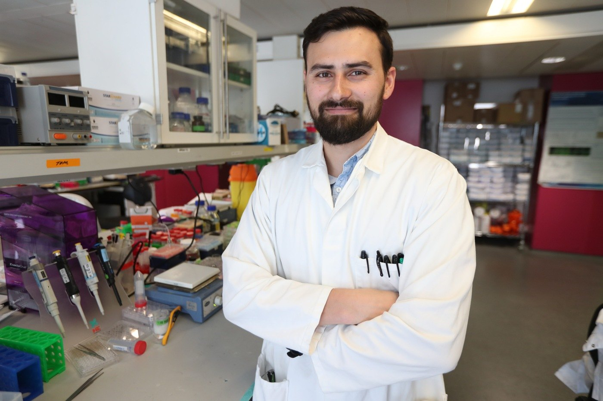

Edited interview
Axel Moore
Learning to build what cartilage can do
Imperial College London
Interview: 1 May 2019 · 4 minute read

What are you trying to recreate in your research?
I want to mimic the functional performance of articular cartilage. That means making a material that can bear the loads we put on our joints and provide lubrication as we move.
My background gave me a mechanical understanding of cartilage: how it supports load and limits friction. I wanted to move from understanding those properties toward making something that could reproduce them.
But a material for the body also has to work biologically. Cells respond to their environment, and that response matters just as much as mechanical performance.
How did you learn the biological side?
That was a major reason for joining Molly Stevens’s group at Imperial. People in the group had the expertise I needed and helped train me in cell culture, tissue engineering, and ways to analyze the results.
During the first year, I learned those skills alongside new materials-fabrication methods. I could then combine them with what I already knew about mechanics.
I still collaborate with others, but I have become more independent as I have developed the skills the project needs. Joining an environment where people could teach me was central to that transition.
How did you find the Whitaker program?
I first heard about it at a Biomedical Engineering Society meeting, a couple of years before I applied. At the time, I thought it might be ending.
As I approached graduation, I checked again and found that there was another funding cycle. I applied with the idea of connecting cartilage mechanics to the design of a material that could reproduce those features. The fellowship helped bring me to Imperial.
How has your day-to-day work changed?
Initially, I spent most of my time in the laboratory getting the project started. Materials design was a new area for me, so there was a great deal of hands-on learning.
Now I also help supervise students whose projects connect to the broader cartilage-engineering work. I spend more time troubleshooting with them and discussing where their projects should go, alongside developing my own research.
Had you lived abroad before moving to London?
I had traveled extensively during an undergraduate marine engineering program. We spent summers on a ship, traveling to different parts of the world. But London was my first experience of Europe.
I expected the United Kingdom to feel more similar to the United States than it did. Sharing a language does not mean all the everyday conventions are the same. Moving from a relatively small university setting into a large city was another adjustment.
The access to people, activities, and travel has been wonderful, even if it can sometimes feel overwhelming.
What was a particularly practical challenge?
Finding somewhere to live with my wife and our pets. We brought two cats and a dog, so we needed a place that allowed them, suited our needs, and fit our budget.
Moving animals across the Atlantic required planning, and finding a suitable rental added another layer. We managed, but it was one of the harder parts of the move.
What have those experiences taught you about communication?
To be more aware that another person may not interpret something the same way I do. Even a familiar-sounding greeting can mean something slightly different in another place.
That carries into science. People have different backgrounds and approaches, and it helps to ask rather than assume. International experience has made me more attentive to that, both professionally and socially.
What would you tell your younger self about planning a career?
Keep your options open. At several points I thought I knew where I would stop: after school, after college, after graduate school. Each time, an opportunity came along and I found that I enjoyed the next stage.
I had expected to go into industry, then the postdoc and Whitaker opportunity changed the direction again. You can make a choice without treating it as permanent. If something does not fit, you can reconsider.
What do you enjoy outside the laboratory?
I make time for hobbies, although there are periods when I need reminding to step away. In London, I have taken up cycling with people from the laboratory. We recently rode from London to Brighton.
I also like fixing things—bicycles, mechanical problems, carpentry projects. Tinkering has always appealed to me. Surfing and snowboarding are other interests, although they are less accessible here.
What would you like to do next?
I plan to apply for faculty positions and build a research program around cartilage mechanics. There are particular contributions I would like to make in that field.
Beyond that, I want to keep learning. I can imagine developing another research direction once I have made progress on those questions. The opportunity to learn something new is part of what has kept me moving forward.